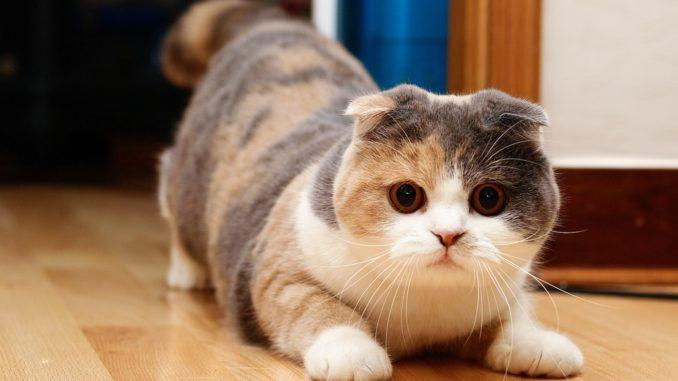

Характер шотландской вислоухой кошки

У шотландских вислоухих от природы крепкое здоровье, однако этих кошек категорически не рекомендуется скрещивать с другими представителями этой же породы. Разведение основано на скрещивании шотландских вислоухих и шотландских с прямыми ушами. Допускается скрещивание с британскими и американскими короткошерстными.
Продолжительность жизни шотландских вислоухих в среднем 14-15 лет. При правильном содержании они нередко живут до 20-22 лет.